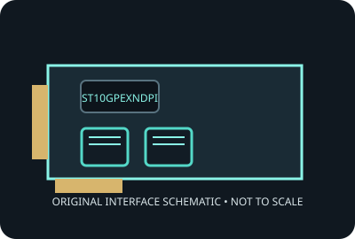

[ MODEL-SPECIFIC NETWORK HARDWARE ]
StarTech.com ST10GPEXNDPI Dual-Port 10GbE PCIe Network Card
Dual-port 10GBASE-T adapter using an Intel X550 controller. Record applies to the exact SKU named here; verify the physical label and revision.

IDENTIFICATION: Product label: ST10GPEXNDPI. Link rates are nominal negotiated signaling rates, not measured throughput.
Specifications and OS compatibility
| Catalog subcategory | Ethernet adapters |
|---|---|
| Exact product SKU | ST10GPEXNDPI |
| Controller | Intel Ethernet Controller X550 (X550-AT2 family on this dual-port implementation). |
| Bus, lane and port interface | PCI Express 3.0 x8; two RJ-45 copper ports. |
| Ports and media | 2 port(s); 10GBASE-T interface. |
| Nominal line rate (not measured) | Each port supports 10, 5, 2.5, 1 Gb/s and 100 Mb/s nominal Ethernet link rates; 20 Gb/s aggregate nominal line rate. |
| Operating systems and drivers | StarTech provides Windows and Linux drivers for the model; the Intel X550 driver family is used where supported. Verify exact OS release, driver and card revision in StarTech downloads. |
| Compatibility notes | Requires a PCIe x8 electrical link and two copper link partners. 10GBASE-T reach depends on cabling: use Cat 6A for 100 m; airflow and slot spacing matter for sustained dual-port operation. |
| Measured throughput | No physical specimen benchmark is claimed. A meaningful result must identify host, peer, link partner, media, driver/firmware, traffic pattern, test tool and duration. |
Model and revision notes
Requires a PCIe x8 electrical link and two copper link partners. 10GBASE-T reach depends on cabling: use Cat 6A for 100 m; airflow and slot spacing matter for sustained dual-port operation.
Confirm exact card revision, device ID, transceiver/cable type, host firmware, bracket and driver build before installation. Use vendor qualification data for server/NAS deployment.
Preservation and measurement notes
Record card revision, controller marking and driver/firmware versions. Power down before installation; handle by edges and store in ESD shielding.
No measured throughput is represented by the nominal line rate. Record peer, media, negotiated rate, traffic pattern, test tool and duration for any future benchmark.
Manufacturer sources and documentation
- StarTech ST10GPEXNDPI product pageManufacturer product specifications, compatibility and downloads.
- StarTech ST10GPEXNDPI support resourcesManufacturer driver/manual downloads for the exact adapter.
- Intel X550 controller specificationsIntel controller-family reference; board-level qualification remains StarTech-specific.
Manufacturer documentation takes precedence for exact SKU, board revision and platform qualification; controller-family data alone does not establish card compatibility.